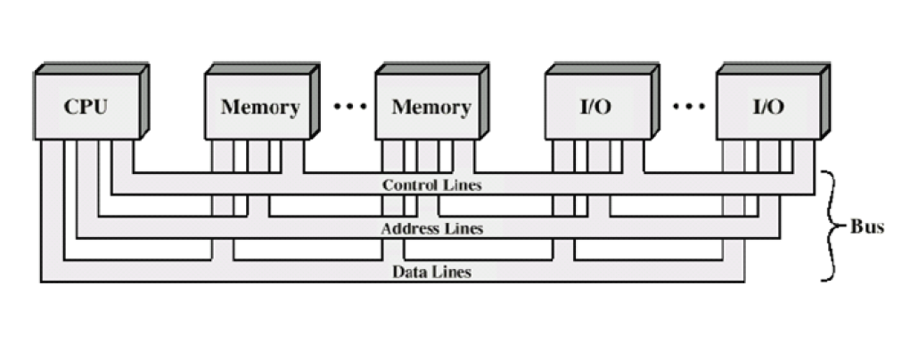

BUS
Anggota kelompok :
- Felix Utama (171110932)
- Jimmy (171110134)
- Bryan Marcelino (171110487)
Definisi Bus
- Bus atau disebut juga dengan pathway merupakan suatu sirkuit yang merupakan jalur transportasi informasi antara dua atau lebih alat-alat dalam system computer. Umumnya, suatu bus terdiri dari berbagai lintasan komunikasi dan saluran
- Sistem Bus adalah kumpulan bus yang menghubung komponen - komponen utama komputer (CPU, Memory dan I/O)
Interkoneksi Bus
Struktur Bus dibagi menjadi 3 yaitu :
- 1. Control Bus
- 2. Address Bus
- 3. Data Bus
Interkoneksi BUS
Prinsip Operasi BUS
Kelemahan pada BUS
Arsitektur BUS
Untuk mengatasi permasalahan akan kelemahan bus maka dibuatlah beberapa arsitektur BUS dasar dengan tujuan untuk meningkatkan efisiensi sistem.
Arsitektur BUS
Arsitektur bus terdapat 2 jenis teknologi BUS sistem, yaitu :
- Traditional Bus
- High Speed Bus
Traditional BUS
High Speed BUS
Traditional BUS
High Speed BUS
Keyboard Interaction
Powered by bespoke-keys
Touch Interaction
Powered by bespoke-touch
Responsive Slides
Powered by bespoke-scale
Bullet List
Powered by bespoke-bullets
- Bullet 1
- Bullet 2
- Bullet 3
Syntax Highlighting
Powered by Lea Verou's Prism
(function() {
function hanoi(n, a, b, c) {
return n ? hanoi(n - 1, a, c, b)
.concat([[a, b]])
.concat(hanoi(n - 1, c, b, a)) : [];
}
return hanoi(3, 'left', 'right', 'mid')
.map(function(d) {
return d[0] + ' -> ' + d[1];
});
})();Named Route
Powered by bespoke-hash
Look up! This route has been named with a data-bespoke-hash attribute.
Just the beginning…
- Edit HTML markup in src/index.html
- Edit Stylus styles in src/styles/user.styl
- Edit JavaScript in src/scripts/main.js
- Enjoy! :) -@markdalgleish